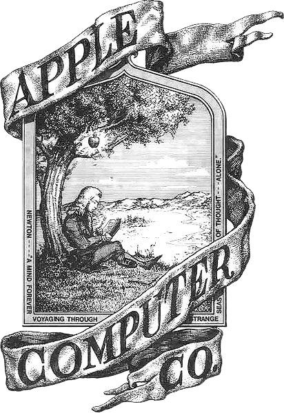
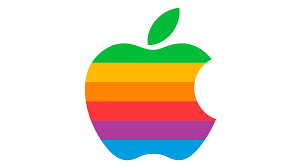

A História do Logo da Apple
Provavelmente você sabe que a Apple é uma das empresas mais valiosas do mundo, conhecida por seus iPhones e Macs de design impecável. Mas talvez você não saiba que o primeiro logo da empresa não tinha nada de minimalista? Pois acompanhe esse artigo para aprender como a famosa Maçã Mordida surgiu.
A primeira versão
A primeira tentativa de criar um logotipo surgiu em 1976 e foi desenhada por Ronald Wayne, o terceiro e menos conhecido fundador da Apple. Ele criou um desenho complexo feito à mão, parecendo uma xilogravura antiga. O desenho mostrava o cientista Isaac Newton sentado debaixo de uma macieira, lendo um livro, com uma maçã brilhante prestes a cair na sua cabeça.

Essa primeira versão durou menos de um ano, pois Steve Jobs achava o desenho muito intelectual, antiquado e, principalmente, impossível de ser reproduzido em tamanhos pequenos nos computadores da época.
Surge a Maçã Mordida
A missão de criar um novo símbolo foi passada para a agência Regis McKenna em 1977. O designer gráfico Rob Janoff ficou responsável pelo projeto. Steve Jobs pediu apenas uma coisa: "Não o faça fofo".
Janoff comprou um saco de maçãs, colocou em uma tigela e passou dias desenhando a fruta. Surgiu então o logo da maçã com listras coloridas. Mas por que a mordida? A resposta é genial: a mordida foi adicionada para que a maçã não fosse confundida com uma cereja ou um tomate quando impressa em tamanhos muito pequenos. Além disso, "mordida" em inglês é bite, que soa exatamente como byte, o termo da computação!

O logo colorido durou até 1998, quando Steve Jobs retornou à Apple e decidiu adotar versões monocromáticas (preto, prateado e branco) para combinar com o novo design moderno dos aparelhos.
Então é isso! Espero que você tenha gostado do nosso artigo com essa curiosidade sobre o logotipo da Apple e suas inspirações incríveis.